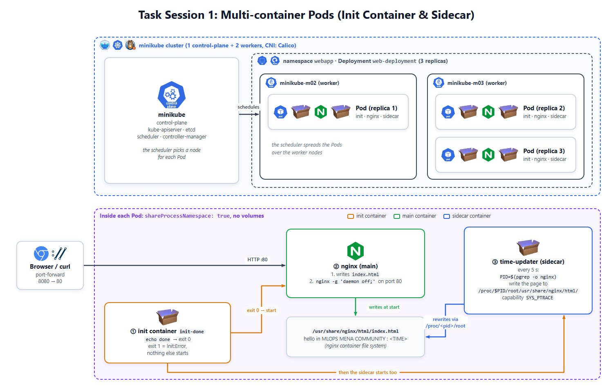
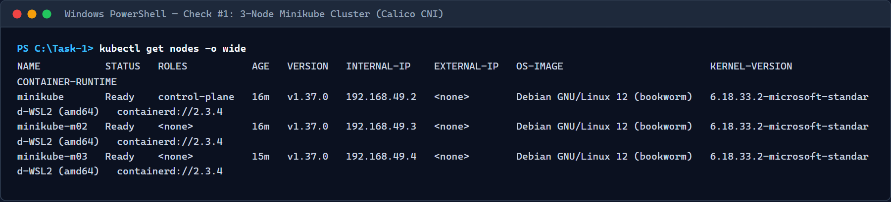
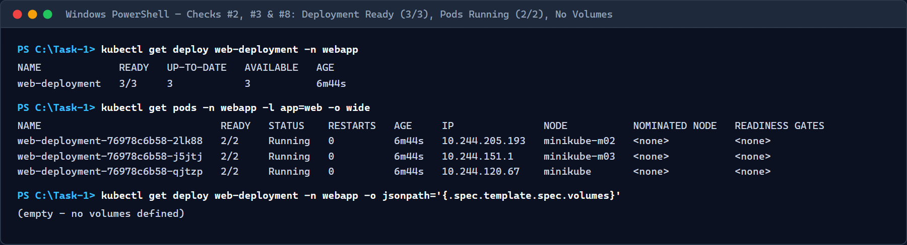
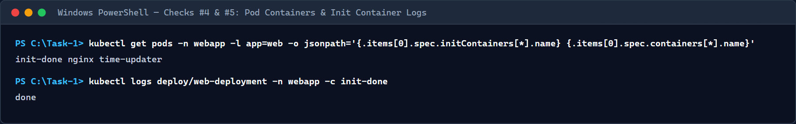
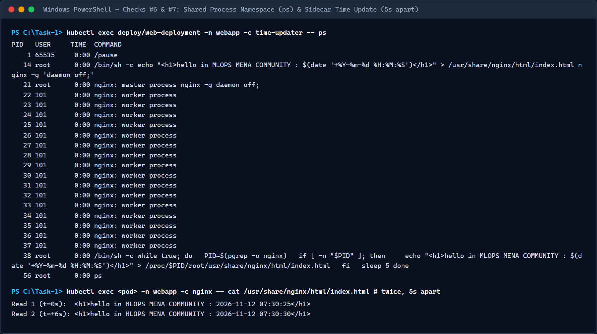
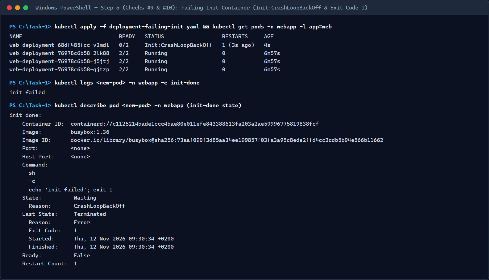
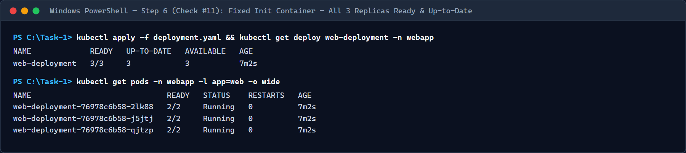

Complete technical guide, conceptual breakdown, annotated Kubernetes manifests, failure experiment analysis, and 11-point verification report.
In this task, we deploy a 3-replica web application named web-deployment inside the webapp namespace on a 3-node Minikube cluster running the Calico CNI network plugin. Each Pod serves an HTML page on port 80 that displays the current timestamp and refreshes every 5 seconds:
hello in MLOPS MENA COMMUNITY : 2026-11-12 09:05:10
Normally, when a sidecar container updates a file served by a main web server container, both containers mount a shared emptyDir volume. In this task, volumes are strictly forbidden. Instead, each Pod uses three containers and shares the Linux process namespace (shareProcessNamespace: true) so the sidecar can write directly into the nginx container's filesystem via /proc/<PID>/root.
| Container Name | Role / Type | Image | Responsibility |
|---|---|---|---|
init-done |
Init Container | busybox:1.36 |
Runs first, prints done, and exits with status 0. Blocks the main and sidecar containers until it succeeds. |
nginx |
Main Container | nginx:1.27 |
Writes the initial timestamped greeting to /usr/share/nginx/html/index.html and runs nginx -g 'daemon off;' on port 80. |
time-updater |
Sidecar Container | busybox:1.36 |
Finds the running nginx master PID every 5 seconds and overwrites /proc/$PID/root/usr/share/nginx/html/index.html with the new timestamp. |
Our Minikube cluster runs with 3 nodes (--nodes 3 --cni=calico --cpus 2 --memory 2200):
minikube): Runs the API Server, etcd state store, Controller Manager (which manages Deployment and ReplicaSet loops), and Scheduler.minikube-m02, minikube-m03): Run kubelet, kube-proxy, and the container runtime to execute application Pods across nodes.In Kubernetes, you never deploy a raw container directly; you deploy a Pod. All containers inside a Pod are always scheduled together onto the exact same node and share:
localhost).shareProcessNamespace: true so containers see each other's running processes.init-done): Defined under spec.initContainers. They run sequentially to completion before any application container starts. If an init container fails (non-zero exit code), Kubernetes restarts it repeatedly (Init:Error → Init:CrashLoopBackOff) and never starts the main or sidecar containers. Because init containers finish before the Pod runs, READY 2/2 counts only the two long-running app containers (nginx and time-updater).
time-updater): Defined alongside the main container in spec.containers. A sidecar runs concurrently with the main application container for the entire lifecycle of the Pod, augmenting or updating the primary service without modifying the main container image.
/proc/<PID>/root & SYS_PTRACE
Even though each container in a Pod has its own isolated root filesystem (from its own Docker image), enabling shareProcessNamespace: true puts all containers in the Pod into the same Linux PID namespace:
time-updater runs PID=$(pgrep -o nginx) to find the oldest (master) nginx process ID./proc/<PID>/root.nginx and time-updater are in different mount namespaces/containers, the Linux kernel restricts cross-container inspection of /proc/<PID>/root unless the reader holds the CAP_SYS_PTRACE capability.capabilities.add: ["SYS_PTRACE"] to time-updater grants permission to traverse /proc/$PID/root/usr/share/nginx/html/index.html and overwrite the HTML file directly inside nginx's root filesystem every 5 seconds.
By default, a Kubernetes Deployment uses strategy.type: RollingUpdate with maxSurge: 25% and maxUnavailable: 25%. For replicas: 3:
maxUnavailable rounds down (floor(3 * 0.25) = 0), meaning Kubernetes must keep all 3 existing Ready Pods alive during an update until a replacement Pod becomes Ready.maxSurge rounds up (ceil(3 * 0.25) = 1), allowing Kubernetes to create 1 extra Pod (4 Pods total) from the new ReplicaSet.Init:CrashLoopBackOff (READY 0/2). Because it never becomes Ready, the Deployment controller halts the rollout and keeps the 3 healthy Pods running and serving requests without interruption.
init-done (busybox:1.36). It executes sh -c "echo done" and exits with code 0.init-done succeeds, kubelet starts nginx and time-updater in parallel inside the shared PID namespace.nginx writes the initial timestamped banner to /usr/share/nginx/html/index.html and starts serving HTTP traffic on port 80 in the foreground (nginx -g 'daemon off;').time-updater looks up the nginx master PID via pgrep -o nginx and writes a fresh timestamp directly into /proc/$PID/root/usr/share/nginx/html/index.html using its SYS_PTRACE capability.Task-1/namespace.yaml)Isolates all Task 1 resources inside the dedicated webapp namespace.
apiVersion: v1
kind: Namespace
metadata:
name: webappTask-1/deployment.yaml)
Deploys 3 replicas with label app: web, shared process namespace enabled, zero volumes, the init-done init container, the nginx web server, and the time-updater sidecar with SYS_PTRACE.
apiVersion: apps/v1
kind: Deployment
metadata:
name: web-deployment
namespace: webapp
labels:
app: web
spec:
replicas: 3
selector:
matchLabels:
app: web
template:
metadata:
labels:
app: web
spec:
shareProcessNamespace: true
initContainers:
- name: init-done
image: busybox:1.36
command: ["sh", "-c", "echo done"]
containers:
- name: nginx
image: nginx:1.27
ports:
- containerPort: 80
command:
- /bin/sh
- -c
- |
echo "<h1>hello in MLOPS MENA COMMUNITY : $(date '+%Y-%m-%d %H:%M:%S')</h1>" > /usr/share/nginx/html/index.html
nginx -g 'daemon off;'
- name: time-updater
image: busybox:1.36
securityContext:
capabilities:
add: ["SYS_PTRACE"]
command:
- /bin/sh
- -c
- |
while true; do
PID=$(pgrep -o nginx)
if [ -n "$PID" ]; then
echo "<h1>hello in MLOPS MENA COMMUNITY : $(date '+%Y-%m-%d %H:%M:%S')</h1>" \
> /proc/$PID/root/usr/share/nginx/html/index.html
fi
sleep 5
doneTask-1/deployment-failing-init.yaml)
Identical to deployment.yaml except the init-done container command prints init failed and exits with code 1 to test Kubernetes rollout resilience.
initContainers:
- name: init-done
image: busybox:1.36
command: ["sh", "-c", "echo 'init failed'; exit 1"]Experiment: In Step 5, we update init-done to run command: ["sh", "-c", "echo 'init failed'; exit 1"] and apply the update over the existing Deployment without deleting it.
Answer: The newly created surge Pod immediately shows Init:Error (with READY 0/2) on its first failed attempt, and after rapid exponential backoff retries by the kubelet, it settles into Init:CrashLoopBackOff (READY 0/2). Inspecting the Pod with kubectl describe pod shows State: Terminated, Reason: Error, and Exit Code: 1 for the init-done container.
nginx and time-updater start in the new Pod?
Answer: No. By design in Kubernetes, all initContainers must complete with exit code 0 before the kubelet starts any container listed in spec.containers. Because init-done exits with code 1, both nginx and time-updater remain in the Waiting state with Reason: PodInitializing and never execute.
Answer: Yes, the web page remains 100% reachable and continues updating its timestamp every 5 seconds.
Why: We updated the Deployment in-place using its default RollingUpdate strategy (maxUnavailable: 25%, maxSurge: 25%). With replicas: 3, maxUnavailable rounds down to 0 (no existing Ready Pods can be terminated until a new Pod becomes Ready) and maxSurge rounds up to 1 (at most 1 extra Pod is created at a time). While the single new surge Pod is stuck in Init:CrashLoopBackOff, the 3 original Pods from the previous ReplicaSet stay 2/2 Running and Ready, continuing to serve all incoming requests without downtime.
Every requirement from the Session 1 specification was verified against the live 3-node Minikube cluster.
| # | Check | Command | Expected Result | Status |
|---|---|---|---|---|
| 1 | 3 nodes Ready | kubectl get nodes -o wide |
minikube, minikube-m02, minikube-m03 are Ready |
PASS |
| 2 | Deployment ready | kubectl get deploy web-deployment -n webapp |
READY 3/3 |
PASS |
| 3 | Pods running | kubectl get pods -n webapp -l app=web -o wide |
3 Pods, each 2/2 Running |
PASS |
| 4 | Containers list | kubectl get pods -n webapp -l app=web -o jsonpath="{.items[0].spec.initContainers[*].name} {.items[0].spec.containers[*].name}" |
init-done nginx time-updater |
PASS |
| 5 | Init succeeded | kubectl logs deploy/web-deployment -n webapp -c init-done |
done |
PASS |
| 6 | Sidecar sees nginx | kubectl exec deploy/web-deployment -n webapp -c time-updater -- ps |
nginx: master process visible in process list |
PASS |
| 7 | Time updates | kubectl exec deploy/web-deployment -n webapp -c nginx -- cat /usr/share/nginx/html/index.html (twice, 5s apart) |
hello in MLOPS MENA COMMUNITY : ... with updated timestamp |
PASS |
| 8 | No volumes | kubectl get deploy web-deployment -n webapp -o jsonpath="{.spec.template.spec.volumes}" |
Empty output | PASS |
| 9 | Failing init (Step 5) | kubectl get pods -n webapp -l app=web |
New Pod Init:Error → Init:CrashLoopBackOff (0/2); 3 old Pods stay 2/2 Running |
PASS |
| 10 | Init error details (Step 5) | kubectl describe pod <new-pod> -n webapp |
init-done shows Exit Code: 1 and log init failed |
PASS |
| 11 | Fixed rollout (Step 6) | kubectl get deploy web-deployment -n webapp |
READY 3/3, UP-TO-DATE 3, AVAILABLE 3 |
PASS |
$ kubectl get nodes -o wide
NAME STATUS ROLES AGE VERSION INTERNAL-IP EXTERNAL-IP OS-IMAGE KERNEL-VERSION CONTAINER-RUNTIME
minikube Ready control-plane 16m v1.37.0 192.168.49.2 <none> Debian GNU/Linux 12 (bookworm) 6.18.33.2-microsoft-standard-WSL2 (amd64) containerd://2.3.4
minikube-m02 Ready <none> 16m v1.37.0 192.168.49.3 <none> Debian GNU/Linux 12 (bookworm) 6.18.33.2-microsoft-standard-WSL2 (amd64) containerd://2.3.4
minikube-m03 Ready <none> 15m v1.37.0 192.168.49.4 <none> Debian GNU/Linux 12 (bookworm) 6.18.33.2-microsoft-standard-WSL2 (amd64) containerd://2.3.4$ kubectl get deploy web-deployment -n webapp
NAME READY UP-TO-DATE AVAILABLE AGE
web-deployment 3/3 3 3 6m44s$ kubectl get pods -n webapp -l app=web -o wide
NAME READY STATUS RESTARTS AGE IP NODE NOMINATED NODE READINESS GATES
web-deployment-76978c6b58-2lk88 2/2 Running 0 6m44s 10.244.205.193 minikube-m02 <none> <none>
web-deployment-76978c6b58-j5jtj 2/2 Running 0 6m44s 10.244.151.1 minikube-m03 <none> <none>
web-deployment-76978c6b58-qjtzp 2/2 Running 0 6m44s 10.244.120.67 minikube <none> <none>$ kubectl get pods -n webapp -l app=web -o jsonpath="{.items[0].spec.initContainers[*].name} {.items[0].spec.containers[*].name}"
init-done nginx time-updater$ kubectl logs deploy/web-deployment -n webapp -c init-done
done$ kubectl exec deploy/web-deployment -n webapp -c time-updater -- ps
PID USER TIME COMMAND
1 65535 0:00 /pause
14 root 0:00 /bin/sh -c echo "<h1>hello in MLOPS MENA COMMUNITY : $(date '+%Y-%m-%d %H:%M:%S')</h1>" > /usr/share/nginx/html/index.html nginx -g 'daemon off;'
21 root 0:00 nginx: master process nginx -g daemon off;
22 101 0:00 nginx: worker process
23 101 0:00 nginx: worker process
38 root 0:00 /bin/sh -c while true; do PID=$(pgrep -o nginx) if [ -n "$PID" ]; then echo "<h1>hello in MLOPS MENA COMMUNITY : $(date '+%Y-%m-%d %H:%M:%S')</h1>" > /proc/$PID/root/usr/share/nginx/html/index.html fi sleep 5 done
56 root 0:00 ps$ kubectl exec deploy/web-deployment -n webapp -c nginx -- cat /usr/share/nginx/html/index.html
<h1>hello in MLOPS MENA COMMUNITY : 2026-11-12 07:30:25</h1>
# After 5 seconds:
$ kubectl exec deploy/web-deployment -n webapp -c nginx -- cat /usr/share/nginx/html/index.html
<h1>hello in MLOPS MENA COMMUNITY : 2026-11-12 07:30:30</h1>$ kubectl get deploy web-deployment -n webapp -o jsonpath="{.spec.template.spec.volumes}"
(empty - no volumes defined)$ kubectl get pods -n webapp -l app=web
NAME READY STATUS RESTARTS AGE
web-deployment-68df485fcc-v2mdl 0/2 Init:CrashLoopBackOff 1 (3s ago) 4s
web-deployment-76978c6b58-2lk88 2/2 Running 0 6m57s
web-deployment-76978c6b58-j5jtj 2/2 Running 0 6m57s
web-deployment-76978c6b58-qjtzp 2/2 Running 0 6m57s$ kubectl logs web-deployment-68df485fcc-v2mdl -n webapp -c init-done
init failed
$ kubectl describe pod web-deployment-68df485fcc-v2mdl -n webapp
Init Containers:
init-done:
Container ID: containerd://c1125214bade1ccc4bae80e011efe843388613fa203a2ae59996775819838fcf
Image: busybox:1.36
Command:
sh
-c
echo 'init failed'; exit 1
State: Waiting
Reason: CrashLoopBackOff
Last State: Terminated
Reason: Error
Exit Code: 1
Started: Thu, 12 Nov 2026 09:30:34 +0200
Finished: Thu, 12 Nov 2026 09:30:34 +0200
Ready: False
Restart Count: 1$ kubectl apply -f Task-1/deployment.yaml
$ kubectl rollout status deploy/web-deployment -n webapp
deployment "web-deployment" successfully rolled out
$ kubectl get deploy web-deployment -n webapp
NAME READY UP-TO-DATE AVAILABLE AGE
web-deployment 3/3 3 3 7m2s




